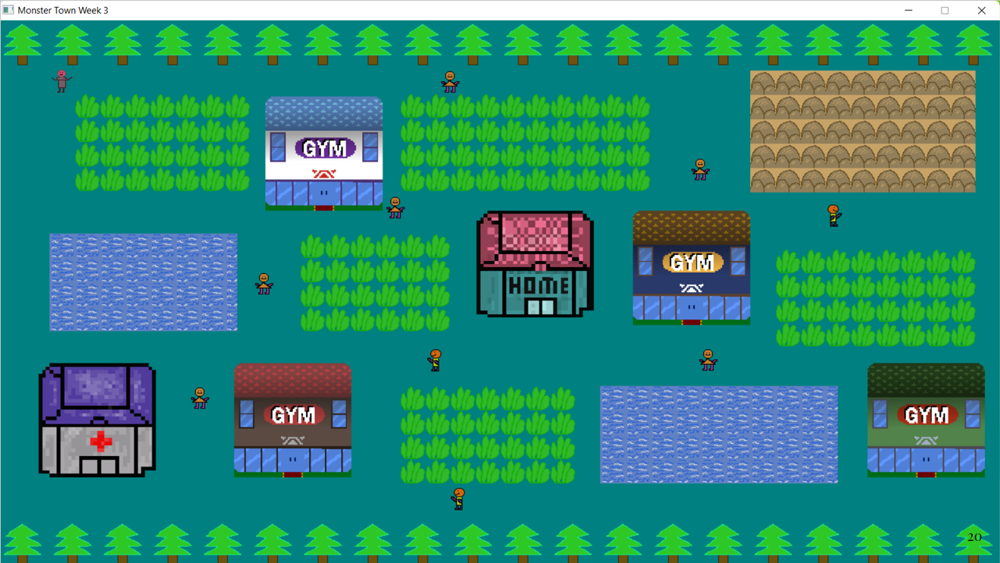
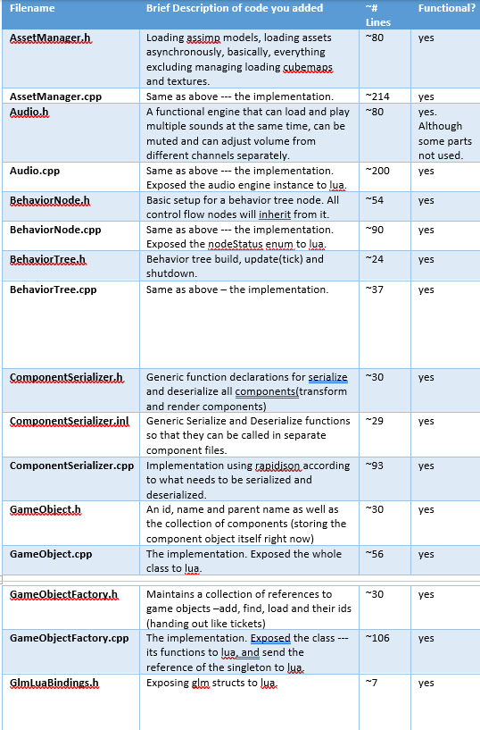
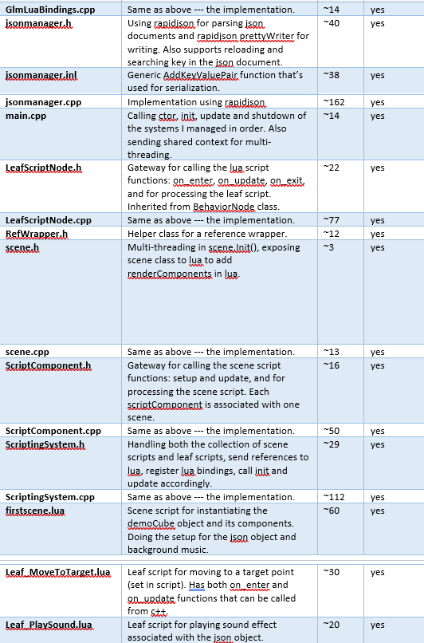
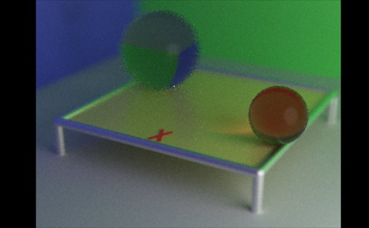
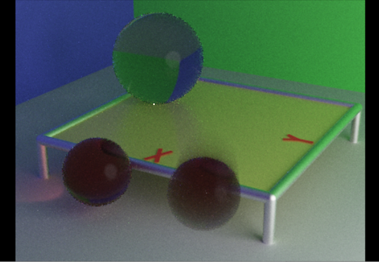
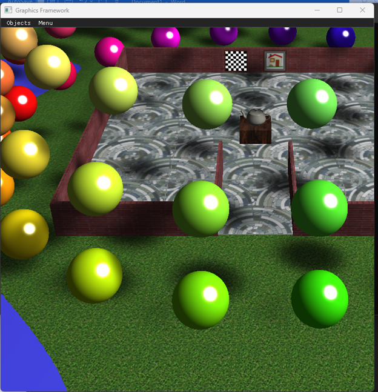
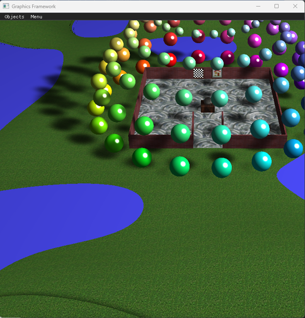
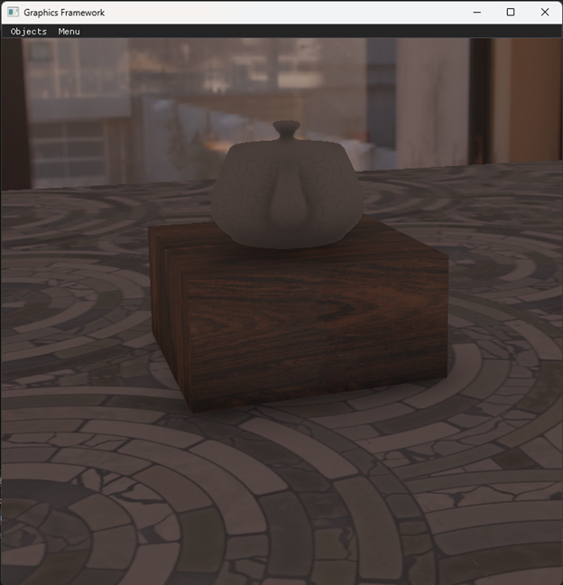
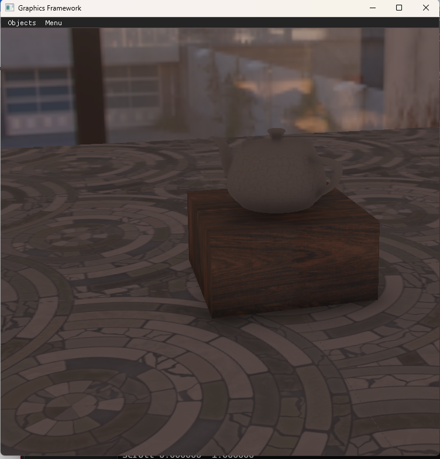

Video game developer from DigiPen
Banner is a screenshot of my first ever game project "Monster Town"
Code up in https://github.com/ZHZ110/cs1666-Team-monster_town

My Portfolio
A showcase for my projects and skills.
Hello, my name is Zhiyi, and I'm a graduate student in Computer Science at DigiPen Institute of Technology, concentrating on Game AI. At DigiPen, I've developed game AI structures such as behavior trees and nav-mesh, and I designed and implemented a scripting system to integrate Lua into our team’s custom engine. Recently, I've expanded my interests into graphics, focusing on ray tracing and real-time rendering.
My passion for game development began at the University of Pittsburgh where I led my team to successfully simulate a small town similar to Pokémon Ruby/Sapphire using Rust and SDL. It was a pivotal moment for me, sparking an interest that led me to DigiPen.
My Game AI Projects
I've worked on several topics relating to game AI, and as a TA, listed below
Behavior Trees
A* Pathfinding
Terrain Analysis
Navmesh Generation
Behavior Trees
For the behavior tree project, I decided to create a "chaser-dodger-protector" game involving 4 agents. It was my first experience using
behavior tree components such as selectors, repeater nodes and interrupter nodes.
chaser-dodger-protector simulator
The red agent is the indicator chicken,which can be controlled by mouse click, and it will also follow the hen(yellow agent).
The black agent is the eagle, it can catch and eat the target chicken(blue agent), will make a munch sound when it does, it can also dodge the hen. It mainly
follows the target chicken(blue), if it approaches the indicator chicken(red), the indicator chicken can get eaten too(munch sound).
The yellow agent is the hen, it will automatically follow and try to approach the eagle. When the eagle is approached, it will be frozen for a random
amount of time.
If the target chicken has been eaten too many times(the munching sound), the indicator chicken will turn white.
I have also tried to implement behavior tree in our custom engine --- a simple one, with a root node, a sequencer and two leaf nodes.
The two leaf nodes are called Leaf_MoveToTarget and Leaf_PlaySound, and executed sequentially in scripts, as shown in the demo and the print statements in
the console. The way the behavior tree update itself is through its tick function. The tick function works with the status of a given node in order to determine
what function will be performed next, what will its children's status be, and whether or not their children gets tick-ed.
A* Pathfinding
I implemented A* pathfinding on a grid-based map, which passed all the tests for optimlity. In addition, I used the Catmull-Rom spline
and rubberbanding to smooth out the path. The yellow and blue colored grids shows if it's on either the openList or the closed list during the process.
Terrain Analysis
For terrain analysis, I started by working on different layers of the map, including visibility --- how many squares
are visible, openness layer --- proximity to static obstacles, cover layer --- locations where AI can take cover form
gunfire, line of sight calculation. All of these layers combined will give a desirability layer, which is especially useful
for game AI in FPS games. Here, I'm using it for a hide and seek game on grid-based maps.
For our navmesh generation research project, the map is no longer grid-based. The AI character can be anywhere on the map aside from
the obstacles. Here we used the ear-clipping method for the triangulation of the walkable area. For the pathfinding on this map, we use
a modified A* pathfinding method to traverse on the triangulated area. This is a group project, but I created the basic triangulation myself on the class framework.
This is a team project. Programming wise, I work as the scripting and AI programmer. I've also worked
on asset loading and game engine structure building. For a secondary role, I'm also the producer of the team.
Here's a demo of the engine, but most of my work lies in the backend.
For scripting, I used sol2 library to bind Lua with c++, so that we can use Lua to do scripting. The point of having
scripting available in our engine is for faster prototyping, avoiding compiling the whole engine when we do the fine tuning
and making small adjustments for our final game. To accomplish this, I built a whole scripting system with script components for
both the scene and behaviors(for the behavior tree that was described in Game AI projects).
For asset loading and game engine structure design, I used assimp for 3D asset loading and rapidjson for serialization and
deserialization. In addition, I have asset loading on a separate thread. For the game engine structure, I'm in charge of implementing
the game object factory and game objects themselves. For optimization, I made the refwrapper class in order to store the collection
of game objects as references instead of pointers so that it would avoid jumps as we update the components of the game objects.
I'm also in charge of the audio part, which I used the FMOD library to load and play both background music and sound effects. It can be
turned up, turned down and turned off with the UI.
As the producer of the team, I organize 90% of our meetings as the producer. I reserved the room for our in-person meeting and made
checklists for what we need to accomplish for our meeting. Mainly, I made sure I knew what everybody was doing and their plans in order
to decide our general direction.
Here's a sorted list of details of all the personal contributions I've made:


3D Game Development --- MiniGamers
This is the game that we are building using the game engine we built last semester. I am still assuming the
role of producer, which has become more involved since the direction of our development needs to be steered even more often:
For example, I decided that after our alpha presentation, based on the "fun factor" of our game is the interaction between the
character and the surroundings. The "feel" of this is quite crucial to our game, which means we should get this out as soon as
we can so that we can have the time to adjust. That means instead of 2d rendering and 2d physics, we should be focusing on animation
first and how the 3d physics works with that.
A demo of the current stage of development:
The capsule in the demo is the current form of the player, which is controlled by arrow keys through the input system.
Its collision direction with the joystick (the other non-moving capsule with a sphere on top) determines the rotation angle of the
square on the 2d screen. There's also a green sphere that drops onto the platform. It follows gravity, has a collider attached to it,
just not collidable with the player, since it is a test object to make sure the physics system works correctly with Lua.
At this stage for me as the scripting programmer, I've added bindings to all the necessary parts of the engine including the input system,
scene2D (the 2d screen) and the physics system. For the physics system, due to its complexity, I've added a wrapper class (physics component)
to avoid the script getting too involved in the calculations of the colliders. I've also used sol functions for callback in lua so that the
script can capture the collision information at the right time. On the lua side, I've implemented the game state stack, event manager and
trigger system in Lua. They are going to be used in game states, collision event management later.
Graphics Projects
The following projects are finished during my MSCS program
Advanced Computer Graphics Framework
This project introduced me to the graphics pipeline, the idea of shaders and GPU, as well as
basic rendering techniques
Micro-facet BRDF lighting in GLSL shader program. Pass lighting values from the application to the shaders. Then use
micro-facet BRDF calculation in GLSL functions.
Textures on all surfaces including skydome. Procedures include texture coordinate functions(scaling, rotation, translations),
procedure textures, conditinal processing, as well as normal map for water ripples.
Shadows (using a two-pass shadow map algorithm). Removed shadow acne by adding shadow depth offset and front face culling while
while generating the shadow map. Used texture debugging for verifying generated shadow map.
The raytracer accepted a scene file. It's read and parsed to build an internal representation
of the scene, including geometric shapes like sphere, cylinder(edges and legs of the table), plane(table top),
the stanford bunny (loaded 3d model). Then the scene was ray-casted, outputted into an HDR file. Above
shows result of both the normal of the surfaces and the distance --- the closer the object is to the eye, the
darker it gets.
Fully featured path-tracer and basic BRDF lighting calculation based on the result produced from the first project
(has noise because of the lack of time to run the raytracer).
Enhanced the very minimal diffuse-only BRDF to include the full-micro-facet BRDF in the lighting equation(Need to
sample BRDF here). The interaction of a ray with a surface can now result in either a diffuse interaction, or a
reflection interaction, and the path-tracing loop must now choose (with a known probability) between the two.
Enhance the reflective micro-facet BRDF to include transmission across the micro-faceted surface into and through
objects.


Enhanced path-tracing with depth of field and motion blur. Left --- depth of field (the orange sphere
is in focus). Right --- motion blur(linear motion)
Real-time Ray-Tracing Framework
A further step into Ray-tracing and first step getting into Vulkan
Get through the startup steps of vulkan, and use the scanline algorithm to display a real-time scene
Start with ray-casting, then extend to a full path-tracing algorithm to display the same real-time scene
A relatively small step beyond ray casting. In path tracing, single ray becomes a path of ray traced from the eye out into
the scene through multiple bounces until a light is encountered (or a russian-rouelette test gives up). The video shows the
accumulation process of ray-tracing.
Use history tracking and À-Trous algorithm to further improve the real-time ray-tracing scene. History tracking reaches through
the past to retrieve the running average from its position in the previous frame. À-Trous algorithm removes the noise from previous buildup.
Advanced Real-time Rendering
Multiple real-time rendering techniques --- getting deeper into the graphics pipeline. Framework using openGL
Implemented deferred shading based on previous project. Ending scene look the same as before, but an extra g-buffer pass is added to allow for multiple local lights.
Picture shows the normal that gets stored in the g-buffer pass.


Moment shadow map algorithm implemented on top of a traditional shadow map, as well
as a GPU filter pass using convolution blur in between the generation of the moment shadow map and its use. Images shown with blurred shadows.
Enhanced the project with physically based lighting, image based lighting and global tone-mapping.


Adding ambient occlusion with a bilateral filter as an edge-aware blur to smooth out the noise in the
calculated ambient occlusion factor. Applying the resulting ambient occlusion factor to the
ambient light, not to any direct light calculations., resulting in an approximation of how bright light should be at different parts
of a visible surface.
Contact Me
Integer eu ante ornare amet commetus vestibulum blandit integer in curae ac faucibus integer non. Adipiscing cubilia elementum integer. Integer eu ante ornare amet commetus.